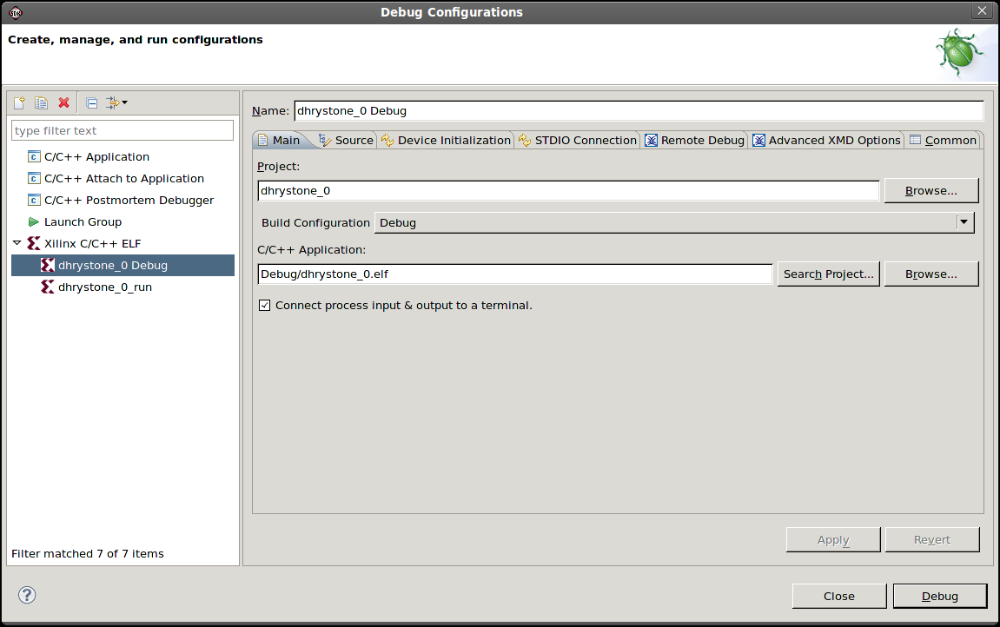

Debugging applications
Run overview
Profile overview
You can select an existing run configuration to use to run your program.
To select a run configuration:


Debugging applications
Run overview
Profile overview

Creating or editing a run/debug/profile configuration
Copyright © 1995-2013 Xilinx, Inc. All rights reserved.